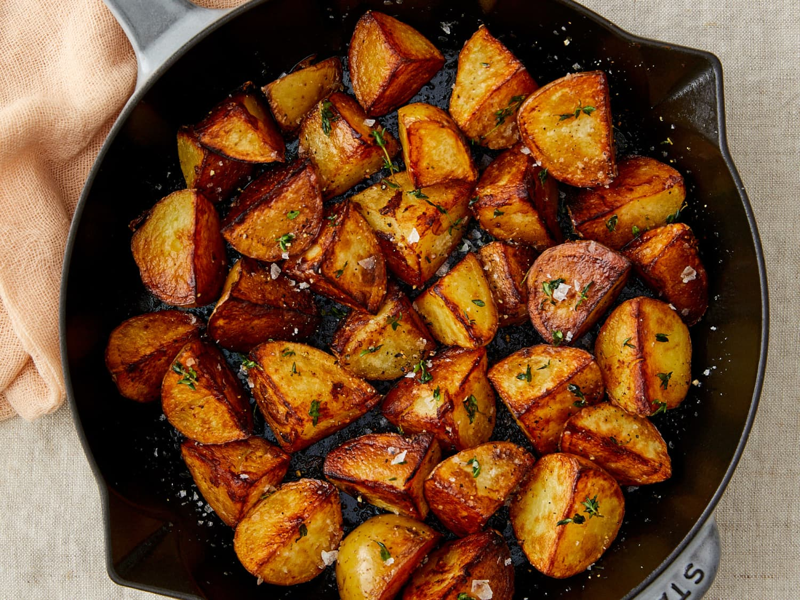

Fried Potatoes

Description:
Level up your side dish and make it the star of the show. Potatoes don't have to be a boring plate filler. With this recipe, you can create a dish that will cause your dinner guests to wonder "How did you make these?" The ultimate compliment to a home chef. All it takes is some chopping, boiling, and pan frying. Let the seasoning do the hard work for you.
The Recipe:
This is one of those dishes that you can start and finish early, place into a warming dish and keep warm in the oven while you're cooking everything else. Lets get started!
Ingredients:
- 1 large cast iron skillet
- 6 cups water
- 1 lb of small golden potatoes (red works too)
- 1/2 stick (4 oz) of unsalted butter
- (Optional) 1/4 cup of beef tallow or bacon fat
- 2 tablespoons kosher sea salt
- 1 tablespoon fresh cracked pepper
- 1 tablespoon garlic powder
- 1 tablespoon onion powder
- 1 tablespoon paprika
Steps:
- Bring water to a boil (add a pinch of salt as boiling begins).
- Chop the potatoes into quarters.
- Boil potatoes for about 12-15 minutes. We want them softened but not breaking apart.
- Mix the salt, pepper, garlic powder, onion powder, and paprika together.
- Add butter (AND your beef tallow or bacon fat if available) to the cast iron skillet and turn burner on to medium.
- Drain water from potatoes thoroughly.
- Once the butter is melted completely, add potatoes to the skillet.
- Mix the potatoes around in the skillet to ensure that they are completely coated with fat on all sides.
- Sprinkle half of the seasoning over the top of the potatoes and let them simmer for about 5 minutes.
- Mix the potatoes around again, making sure all of the sides get a chance to touch the skillet and be seasoned.
- Sprinkle the rest of the seasoning over the top of the potatoes and let them simmer for 5 more minutes.
- Cook until you have the desired crispiness and texture, turn off the burner and move all of the contents of the skillet over to a dish for serving.
- Enjoy!